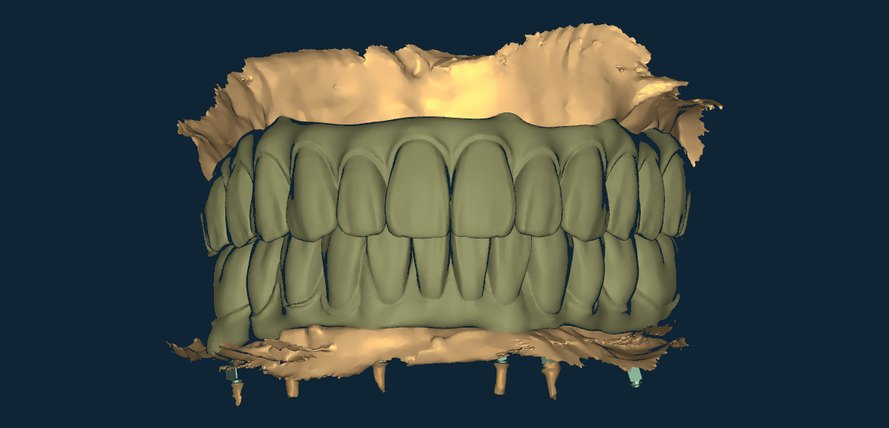
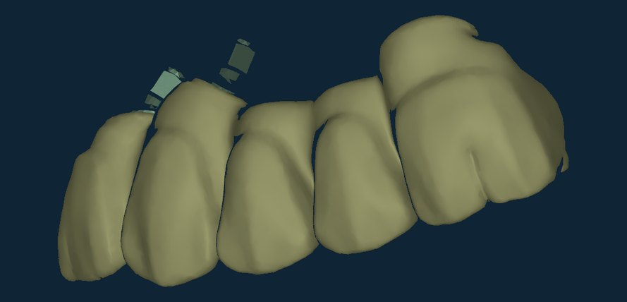
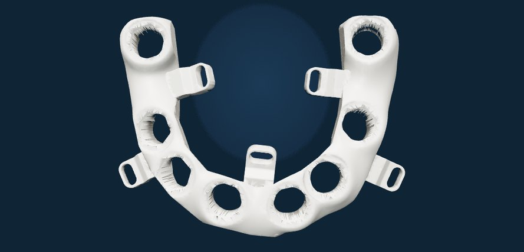

exocad Konstruktion als Dienstleistung – Überlauf-Kapazität für Ihr Labor.
Wir konstruieren für Labore, wenn intern die Kapazität knapp wird – nicht als Ersatz für Ihr Team. Sie bekommen nicht nur die STL, sondern das komplette exocad-Projekt und prüfen jeden Schritt selbst, bevor gefräst wird.
Wann sich externe Konstruktion lohnt
- Spitzenwochen: Fälle stauen sich, Ihr Team ist voll – wir fangen den Überlauf ab.
- Offene Stelle: Bis ein neuer CAD-Techniker gefunden und eingearbeitet ist, vergehen oft Monate. Wir überbrücken die Zeit.
- Urlaub und Krankheit: Die Konstruktion läuft weiter, auch wenn jemand fehlt.
- Nachtstunden: Scans am Abend senden, Konstruktion am Morgen im Postfach, Fräsen ab 8 Uhr.
Unser Studio wird von einem Zahnarzt mit eigenem Zirkonlabor geleitet; ein kleines exocad-Team konstruiert seit über fünf Jahren für die Produktion.
Volle Kontrolle: das komplette exocad-Projekt
Der häufigste Einwand gegen externe Konstruktion: „Ich kann die Zwischenschritte nicht kontrollieren.“ Deshalb liefern wir immer das vollständige exocad-Projekt zusammen mit den STL-Dateien. Ihr Team öffnet es in exocad DentalCAD und prüft:
- Präparationsgrenze – durchgehend, ohne Über- oder Unterextension
- Approximalkontakte und Okklusion gegen den Antagonisten
- Mindeststärke passend zu Ihrem Material, Verbinderquerschnitte bei Brücken
- Emergenzprofil, besonders bei Implantatkronen, und Einschubrichtung
Passt etwas nicht, passen Sie es selbst an – oder wir korrigieren. Korrekturen sind inklusive, bis Sie freigeben.
Was wir konstruieren – und was es kostet
| Versorgung | Preis |
|---|---|
| Kronen, Brückenglieder, Inlays, Onlays, Veneers | 6,40 USD / Einheit |
| Implantatkronen, verschraubte Einheiten, individuelle Abutments | 9,10 USD / Einheit |
| Vollbogen auf Implantaten (All-on-4 / All-on-6) | 88 USD / Kiefer |
| Aufbissschienen und Knirscherschienen | 12 USD / Einheit |
| Bohrschablonen (zahn- oder schleimhautgetragen) | ab 86,50 USD |
| Ihr erster Fall | kostenlos |
Monatliche Design-Seat-Pakete ab 5,16 USD pro Einheit: Pläne ansehen.
Beispiele aus unserem Portfolio

Vollrekonstruktion auf Implantaten 6+6
Implantatbrücke 22–26
Bohrschablone, 8 Implantate OKAlle Fälle lassen sich in unserer 3D-Bibliothek drehen und im Browser prüfen.
So funktioniert es
- Fall senden: Scans (STL / PLY oder exocad-Projekt) mit Auftrag per E-Mail an boundlesscad.design@gmail.com – größere Fälle als WeTransfer-, Google-Drive- oder Dropbox-Link.
- Wir konstruieren in exocad: Anatomie, Kontakte, Okklusion und Verbinder – nach Ihrem Material, Zementspalt und CAM-Setup.
- Sie prüfen: im exocad-Projekt oder per Screenshots / Webview. Korrekturen inklusive.
- Produzieren: finale STL plus Projekt, bereit für Ihre Fräse, Ihren Drucker oder Ihr Fräszentrum.
Tipp: Prüfen Sie Ihren Scan vorher kostenlos mit unserem STL-Check – Löcher, defekte Kanten und falsche Einheiten werden in Sekunden gefunden, die Datei verlässt Ihren Browser nicht. Eine digitale Auftragsvorlage mit FDI-Zahnschema finden Sie unter Fall senden (Englisch).
Häufige Fragen
Ersetzt das unser eigenes Konstruktionsteam?
Nein. Wir sind als Überlauf gedacht: für Spitzenwochen, Urlaub, Krankheit oder die Zeit, bis eine offene Stelle besetzt ist. Ihr Team behält die Kontrolle über jeden Fall.
Was bekommen wir zurück?
Produktionsfertige STL-Dateien und das komplette exocad-Projekt. So kann Ihr Team Ränder, Kontakte und Okklusion selbst öffnen, prüfen und vor dem Fräsen anpassen.
Welche Dateien brauchen Sie?
Intraoral- oder Modellscans als STL oder PLY oder ein komplettes exocad-Projekt, dazu den Auftrag: Zahnnummern, Art der Versorgung, Material und Farbe. Bei Implantatfällen bitte Implantatsystem und Scanbody angeben.
Wie schnell ist die Rückgabe?
Standard sind 24–48 Stunden für Kronen und Brücken. Kronen und Brücken, die bis 18:00 Uhr Ihrer Ortszeit eingehen, liegen meist am nächsten Morgen um 8:00 Uhr fertig vor. Vollbögen und Bohrschablonen planen wir pro Fall.
Halten Sie sich an unsere Konstruktionsparameter?
Ja. Schicken Sie uns Ihre Parameter einmal – Zementspalt, Mindeststärke, Verbinderquerschnitte, bevorzugte Zahnbibliotheken – und wir wenden sie bei jedem Fall an. Korrekturen sind inklusive, bis Sie freigeben.
Was kostet die Konstruktion?
Der erste Fall ist kostenlos. Danach: Krone/Brückenglied 6,40 USD pro Einheit, Implantatkrone oder individuelles Abutment 9,10 USD, Vollbogen auf Implantaten 88 USD pro Kiefer, Aufbissschiene 12 USD, Bohrschablone ab 86,50 USD. Abgerechnet wird pro Einheit mit Vorauszahlung in USDT, USDC oder BTC.
Sind Patientendaten sicher?
Wir brauchen nur anonymisierte Dateien mit einem Fallcode, nie Patientennamen. Alle Arbeiten sind White-Label – Ihre Kunden erfahren nichts von uns.
Testen Sie uns an Ihrer eigenen Arbeit
Schicken Sie uns Ihren nächsten Fall – wir konstruieren ihn kostenlos, und Sie entscheiden anhand des Ergebnisses. Falls es nicht passt, genügt ein kurzes „Nein“.